32:55 · 26 OPERE
Nadine Gordimer: Scrivere ed essere.
Il filo del discorso
Il video propone la lettura italiana della lezione Nobel di Nadine Gordimer del 1991. L’autrice presenta la scrittura come indagine su di sé e sulle relazioni umane, intrecciando mito, immaginazione ed esperienza. L’episodio del prigioniero di Borges apre la ricerca di un significato nei segni; Barthes e Lévi-Strauss introducono il rapporto fra racconto e conoscenza. La riflessione sulla critica lascia spazio alla formazione personale: le prime percezioni, la lettura e l’incontro con le ingiustizie sudafricane. Gordimer affronta quindi la tensione fra responsabilità civile e libertà dell’opera, opponendosi sia all’isolamento dello scrittore sia alla riduzione della letteratura a messaggio obbligato. Camus, García Márquez, Miłosz e Brecht accompagnano questo passaggio. La difesa di Salman Rushdie amplia il discorso dalla censura alla minaccia contro la vita di chi scrive. La conclusione lega l’integrità artistica alla disponibilità a contraddire anche il proprio schieramento. Le valutazioni appartengono a Gordimer e al contesto storico della lezione; il filmato non è presentato come un saggio originale di Dr Divago.
I libri nel discorso
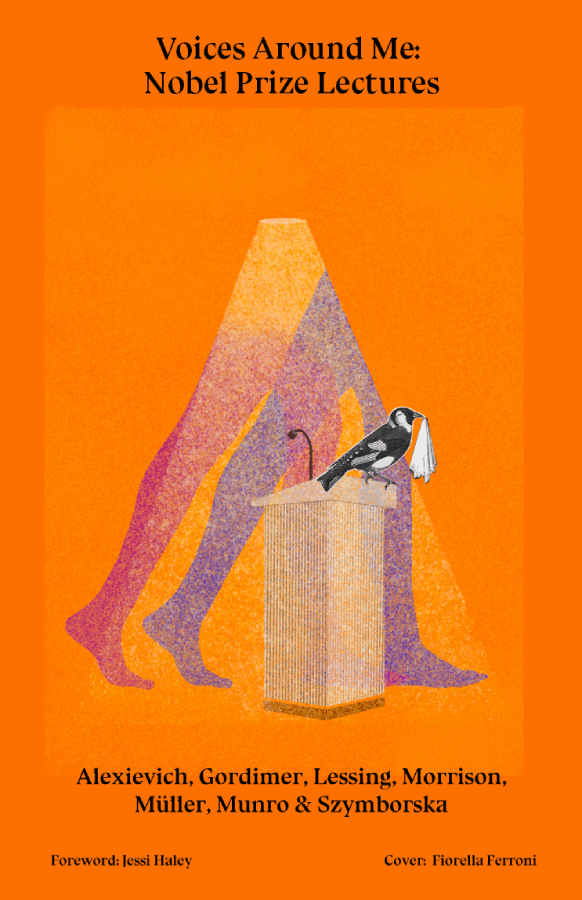
Scrivere ed essere (Writing and Being, lezione Nobel 1991)
Copertina della raccolta: COPERTINA DELLA RACCOLTA Voices Around Me: Nobel Prize Lectures, Cita Press, marzo 2023, ISBN 9781961368118, prefazione di Jessi Haley, copertina di Fiorella Ferroni. Contiene la lezione di Gordimer datata 7 dicembre 1991. Edizione successiva al filmato; la copertina non rappresenta il volume Harvard Writing and Being del 1995.
Copertina autentica della raccolta che contiene il testo citato; il singolo componimento non è un volume autonomo. Edizione non identificata nel video.
Nadine Gordimer, Scrivere ed essere, lezione Nobel: lettura dell’intero contributo.
Passaggio 0:06 ↗ · Fonti e libro ↗
Bibbia
Identificazione probabile
Copertina: San Paolo, 2014 · Nuova Versione dai Testi Antichi · edizione di riferimento
Richiamo al principio del Verbo, prologo del Vangelo secondo Giovanni, capitolo 1.
Passaggio 0:31 ↗ · Fonti e libro ↗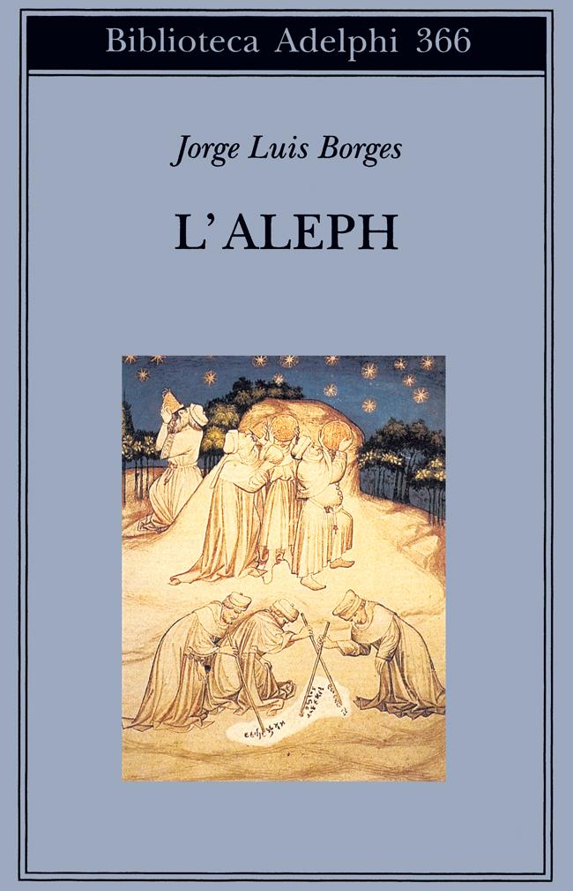
La scrittura del dio
Copertina della raccolta: COPERTINA DELLA RACCOLTA L’Aleph, Biblioteca Adelphi 366, 1998, 18ª edizione indicata nel catalogo attuale, 171 pagine, traduzione di Francesco Tentori Montalto, a cura di Tommaso Scarano, ISBN 9788845914201. Non è la copertina di un libro autonomo intitolato La scrittura del dio.
Copertina autentica della raccolta che contiene il testo citato; il singolo componimento non è un volume autonomo. Edizione non identificata nel video.
Borges, racconto della scrittura del dio, prigioniero e giaguaro.
Passaggio 2:55 ↗ · Fonti e libro ↗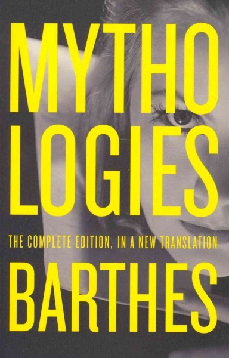
Miti d’oggi (Mythologies)
Identificazione probabile
Copertina: Mythologies: The Complete Edition, in a New Translation, Hill and Wang, 12 marzo 2013, brossura, 288 pagine nel catalogo editoriale, traduzioni di Richard Howard e Annette Lavers, ISBN 9780809071944. La descrizione bibliotecaria xii, 274 pagine usa un conteggio diverso. Copertina intera grigia con caratteri gialli; non è l’edizione abbreviata citata nel 1991.
Immagine autentica dell’opera, controllata visivamente; l’edizione di riferimento non è attribuita al filmato.
Barthes, mito e forma: libro identificato dalla nota 2 della lezione Nobel.
Passaggio 5:28 ↗ · Fonti e libro ↗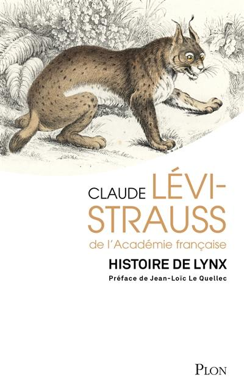
Histoire de lynx
Identificazione probabile
Copertina: Riedizione Plon del 20 febbraio 2025, prefazione di Jean-Loïc Le Quellec, ISBN 9782259321440. Copertina intera con lince. Librest descrive 341 pagine; altri cataloghi commerciali riportano conteggi diversi, non uniformati qui. Opera originale del 1991; copertina del 2025 successiva al filmato, non prova dell’edizione letta.
Immagine autentica dell’opera, controllata visivamente; l’edizione di riferimento non è attribuita al filmato.
Lévi-Strauss, mito fra fiaba e romanzo poliziesco: nota 3, Histoire de lynx.
Passaggio 5:48 ↗ · Fonti e libro ↗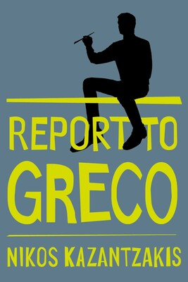
Rapporto al Greco (Report to Greco)
Identificazione probabile
Copertina: Report to Greco, Simon & Schuster, ebook del 18 settembre 2012, 506 pagine indicate, ISBN 9781476706863. Traduzione inglese di P. A. Bien; originale greco pubblicato postumo ad Atene nel 1961, prima versione inglese nel 1965. Copertina grigia e gialla con figura che dipinge; non è una copertina dei Fratricidi.
Immagine autentica dell’opera, controllata visivamente; l’edizione di riferimento non è attribuita al filmato.
Kazantzakis, arte e forze che creano il corpo; secondo passo sul ritmo. Note 4 e 12, Report to Greco.
Passaggio 6:32 ↗ · Fonti e libro ↗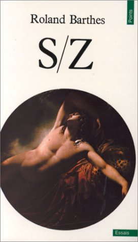
S/Z
Identificazione probabile
Copertina: S/Z, Points Essais, Seuil, ISBN 9782020043496, edizione di collana del 1 febbraio 1976 con successivi tiraggi. Copertina con particolare del Sonno di Endimione di Girodet. La paginazione cambia fra tiraggi, non si attribuisce automaticamente a questa immagine quella dell’originale 1970.
Immagine autentica dell’opera, controllata visivamente; l’edizione di riferimento non è attribuita al filmato.
Barthes e la scomposizione di Sarrasine: S/Z identificato nella nota 5.
Passaggio 10:49 ↗ · Fonti e libro ↗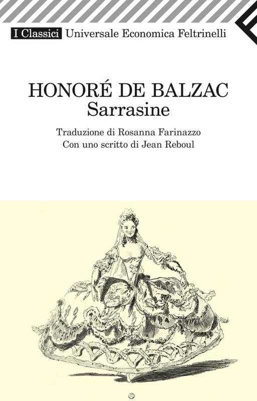
Sarrasine
Copertina: Feltrinelli, Universale Economica I Classici, 7 aprile 2010, 64 pagine, traduzione di Rosanna Farinazzo, scritto di Jean Reboul, ISBN 9788807822162. Nome della traduttrice confermato anche sulla copertina; non si ripete l’iniziale F. errata in un catalogo promozionale successivo.
Immagine autentica dell’opera, controllata visivamente; l’edizione di riferimento non è attribuita al filmato.
Sarrasine di Balzac, novella analizzata in S/Z; nome deformato dalla trascrizione automatica.
Passaggio 10:55 ↗ · Fonti e libro ↗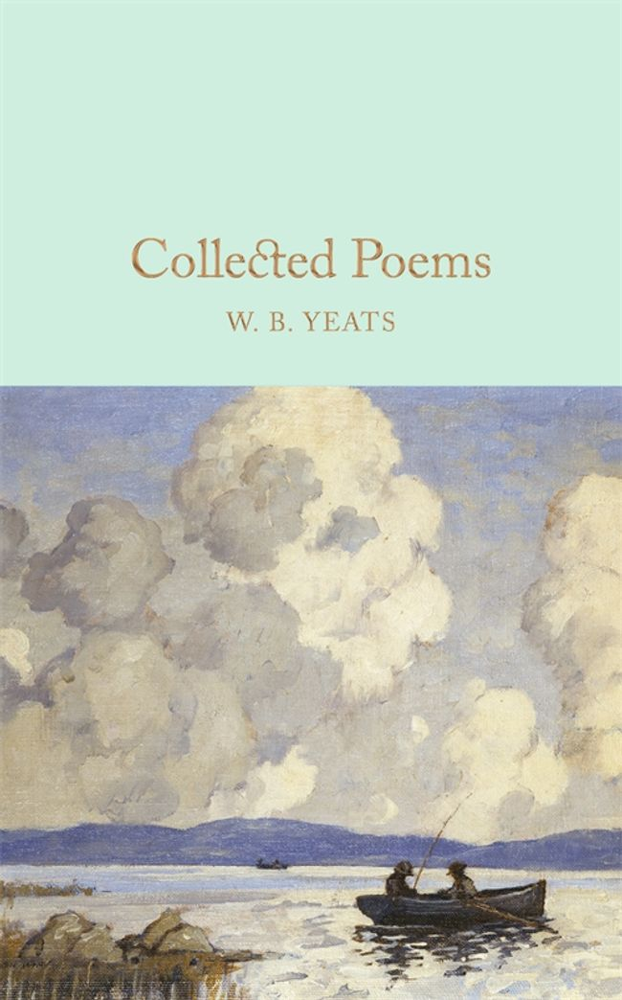
Un aviatore irlandese prevede la sua morte (An Irish Airman Foresees His Death)
Identificazione probabile
Copertina della raccolta: COPERTINA DELLA RACCOLTA Collected Poems, W. B. Yeats, Macmillan Collector’s Library, luglio 2016, 480 pagine, introduzione di Robert Mighall, ISBN 9781909621640. Riproduce la raccolta del 1933. Immagine intera con paesaggio marino; condivisa fra i tre componimenti, distinti nel repertorio. Non è una pubblicazione autonoma della singola poesia.
Copertina autentica della raccolta che contiene il testo citato; il singolo componimento non è un volume autonomo. Edizione non identificata nel video.
Yeats, volo del pilota e gioia solitaria: An Irish Airman Foresees His Death.
Passaggio 11:48 ↗ · Fonti e libro ↗Pasqua 1916 (Easter, 1916)
Identificazione probabile
Copertina della raccolta: COPERTINA DELLA RACCOLTA Collected Poems, W. B. Yeats, Macmillan Collector’s Library, luglio 2016, 480 pagine, introduzione di Robert Mighall, ISBN 9781909621640. Riproduce la raccolta del 1933. Immagine intera con paesaggio marino; condivisa fra i tre componimenti, distinti nel repertorio. Non è una pubblicazione autonoma della singola poesia.
Copertina autentica della raccolta che contiene il testo citato; il singolo componimento non è un volume autonomo. Edizione non identificata nel video.
Yeats, bellezza terribile e rivolta: Easter, 1916.
Passaggio 12:00 ↗ · Fonti e libro ↗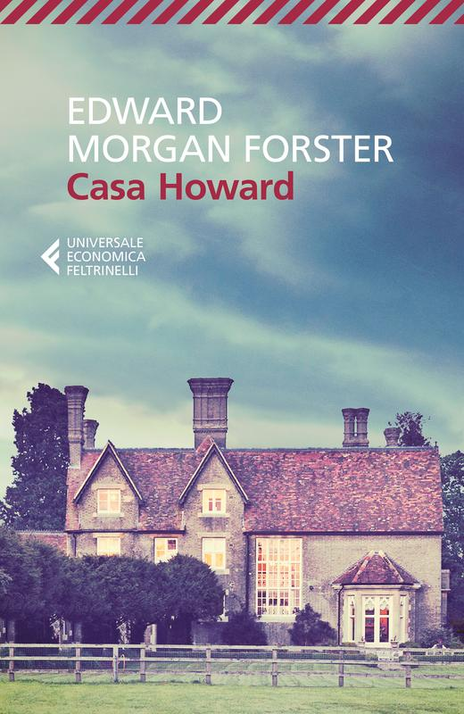
Casa Howard (Howards End)
Identificazione probabile
Copertina: Casa Howard, Feltrinelli, Universale Economica I Classici, 18 gennaio 2018, 320 pagine, traduzione di Luisa Chiarelli, ISBN 9788807902949. Copertina con casa di campagna; edizione distinta dall’originale inglese del 1910.
Immagine autentica dell’opera, controllata visivamente; l’edizione di riferimento non è attribuita al filmato.
Forster, motto della connessione: epigrafe di Howards End.
Passaggio 12:06 ↗ · Fonti e libro ↗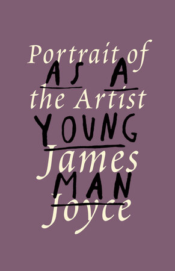
Ritratto dell’artista da giovane (A Portrait of the Artist as a Young Man)
Identificazione probabile
Copertina: A Portrait of the Artist as a Young Man, Vintage, brossura del 6 aprile 1993, 288 pagine, ISBN 9780679739890. Copertina intera viola con titolo composto tipograficamente; l’immagine e l’ISBN riguardano la brossura, non l’edizione Everyman’s Library del 1991. Romanzo originale del 1916.
Immagine autentica dell’opera, controllata visivamente; l’edizione di riferimento non è attribuita al filmato.
Joyce, silenzio, esilio e astuzia: Stephen Dedalus nel Portrait, capitolo V.
Passaggio 12:15 ↗ · Fonti e libro ↗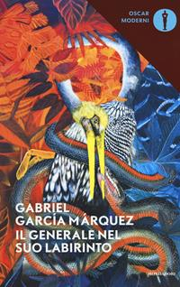
Il generale nel suo labirinto
Copertina: Mondadori, Oscar moderni, 24 luglio 2017, 212 pagine illustrate, traduzione di Angelo Morino, ISBN 9788804682684. Copertina con uccello e vegetazione; non si attribuiscono a questa edizione le 286 pagine di precedenti tiraggi.
Immagine autentica dell’opera, controllata visivamente; l’edizione di riferimento non è attribuita al filmato.
García Márquez, labirinto e Simón Bolívar: Il generale nel suo labirinto.
Passaggio 12:22 ↗ · Fonti e libro ↗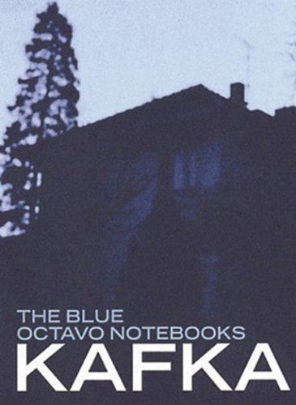
Ho tre cani (frammento del terzo quaderno in ottavo)
Copertina della raccolta: COPERTINA DELLA RACCOLTA The Blue Octavo Notebooks, Exact Change, a cura di Max Brod, traduzione di Ernst Kaiser ed Eithne Wilkins, ISBN 9781878972040. Il catalogo attuale indica 120 pagine; la descrizione bibliotecaria del tiraggio 1991 ne indica 107. La copertina illustra la raccolta, non un volume autonomo del frammento; non si uniformano le date dei diversi tiraggi.
Copertina autentica della raccolta che contiene il testo citato; il singolo componimento non è un volume autonomo. Edizione non identificata nel video.
Kafka, tre cani, fra cui Mai più: terzo quaderno in ottavo, nota Nobel 7.
Passaggio 14:56 ↗ · Fonti e libro ↗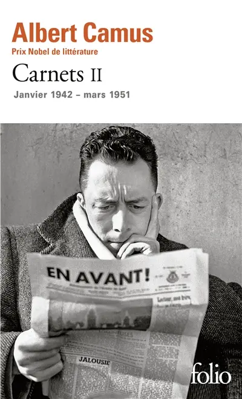
Carnets II. Janvier 1942 – mars 1951
Identificazione probabile
Copertina: Carnets II. Janvier 1942 – mars 1951, Gallimard, Folio, 19 settembre 2013, 367 pagine, edizione stabilita e annotata da Raymond Gay-Crosier, ISBN 9782070454051. Copertina intera con Camus che legge un giornale. Distinta dall’originale postumo Gallimard 1964, 350 pagine.
Immagine autentica dell’opera, controllata visivamente; l’edizione di riferimento non è attribuita al filmato.
Camus, uomini impegnati e letteratura, coraggio e talento: Carnets II, pagine originali 180–181.
Passaggio 21:08 ↗ · Fonti e libro ↗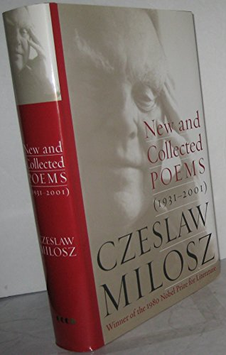
Dedica (Dedication / Przedmowa)
Identificazione probabile
Copertina della raccolta: COPERTINA DELLA RACCOLTA New and Collected Poems: 1931–2001, Ecco/HarperCollins, 2001, edizione rilegata, 800 pagine, ISBN 9780060196677. Fotografia della sovraccoperta bianca e rossa. Dedication è a pagina 77; non si confonde questo volume con i Selected Poems citati da Gordimer o con la singola poesia.
Copertina autentica della raccolta che contiene il testo citato; il singolo componimento non è un volume autonomo. Edizione non identificata nel video.
Miłosz, poesia che salva popoli e persone: Dedication, nota Nobel 10.
Passaggio 22:36 ↗ · Fonti e libro ↗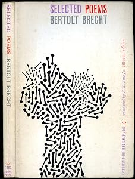
A coloro che verranno dopo di noi (An die Nachgeborenen / To Posterity)
Identificazione probabile
Copertina della raccolta: COPERTINA DELLA RACCOLTA Selected Poems, Bertolt Brecht, traduzione di Hoffman Reynolds Hays, Grove Press, Evergreen E-187, ristampa 1959, 179 pagine, testo inglese e tedesco. Fotografia dell’esemplare con dorso visibile, copertina bianca e disegno nero. Non è un volume autonomo di To Posterity.
Copertina autentica della raccolta che contiene il testo citato; il singolo componimento non è un volume autonomo. Edizione non identificata nel video.
Brecht, parlare degli alberi e silenzio sulle atrocità: To Posterity, nota Nobel 11.
Passaggio 22:42 ↗ · Fonti e libro ↗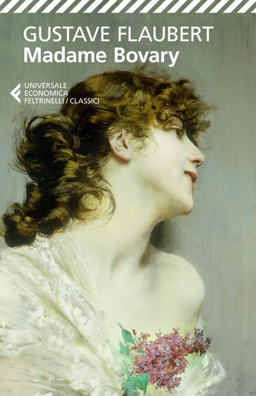
Madame Bovary
Copertina: Feltrinelli, Universale Economica I Classici, 12 febbraio 2014, 384 pagine, ISBN 9788807900983. Copertina intera con ritratto femminile di profilo. Il sito corrente accredita Roberto Carifi, mentre un catalogo promozionale 2024 riporta un altro traduttore: non viene certificato qui il traduttore del singolo tiraggio senza colophon.
Immagine autentica dell’opera, controllata visivamente; l’edizione di riferimento non è attribuita al filmato.
Madame Bovary nel passaggio sui processi agli scrittori.
Passaggio 25:39 ↗ · Fonti e libro ↗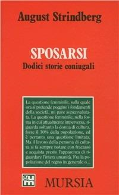
Sposarsi. Dodici storie coniugali (Giftas I)
Copertina: Sposarsi. Dodici storie coniugali, Mursia, Grande Universale Mursia, 184 pagine, ISBN 9788842517962, a cura di Franco Perrelli, traduzione di Carmen Giorgetti Cima. Edizione italiana documentata nel 1995; il catalogo commerciale della ristampa indica 3 gennaio 2022. Copertina rossa; non si attribuisce il 2022 alla prima edizione italiana.
Immagine autentica dell’opera, controllata visivamente; l’edizione di riferimento non è attribuita al filmato.
Strindberg, Getting Married / Giftas, processo per blasfemia del primo volume.
Passaggio 25:45 ↗ · Fonti e libro ↗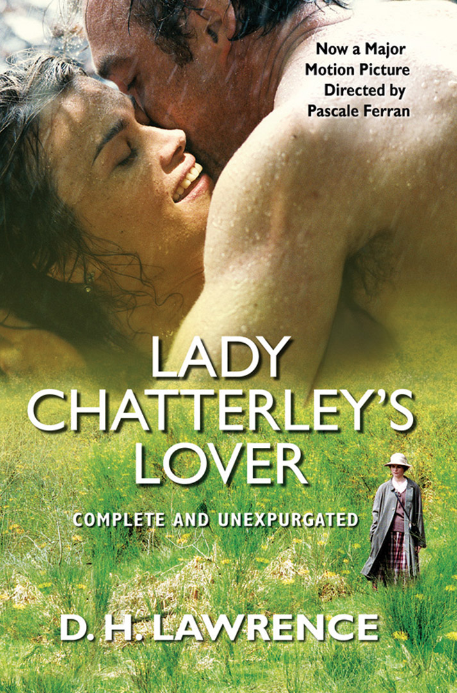
L’amante di Lady Chatterley
Copertina: Lady Chatterley’s Lover, Grove Paperback, ISBN 9780802133342, 384 pagine, prefazione di Archibald MacLeish, introduzione di Mark Schorer. Il catalogo data l’edizione al 1 febbraio 1962, ma la copertina attualmente fornita è una successiva ristampa con richiamo al film di Pascale Ferran, 2006: l’immagine non risale al 1962. È la copertina del romanzo, non una nuova scheda del film.
Immagine autentica dell’opera, controllata visivamente; l’edizione di riferimento non è attribuita al filmato.
L’amante di Lady Chatterley nel passaggio sulle persecuzioni editoriali.
Passaggio 25:50 ↗ · Fonti e libro ↗
I versi satanici (The Satanic Verses)
Copertina: The Satanic Verses, Viking, edizione rilegata statunitense del 22 febbraio 1989, 560 pagine, ISBN 9780670825370. Copertina intera con bordo rosso e figure nere e gialle, scaricata dall’immagine editoriale dedicata e non dal riquadro social. L’edizione americana del 1989 non sposta al 1989 l’originale britannico del 1988.
Immagine autentica dell’opera, controllata visivamente; l’edizione di riferimento non è attribuita al filmato.
The Satanic Verses di Rushdie, titolo esplicito.
Passaggio 27:10 ↗ · Fonti e libro ↗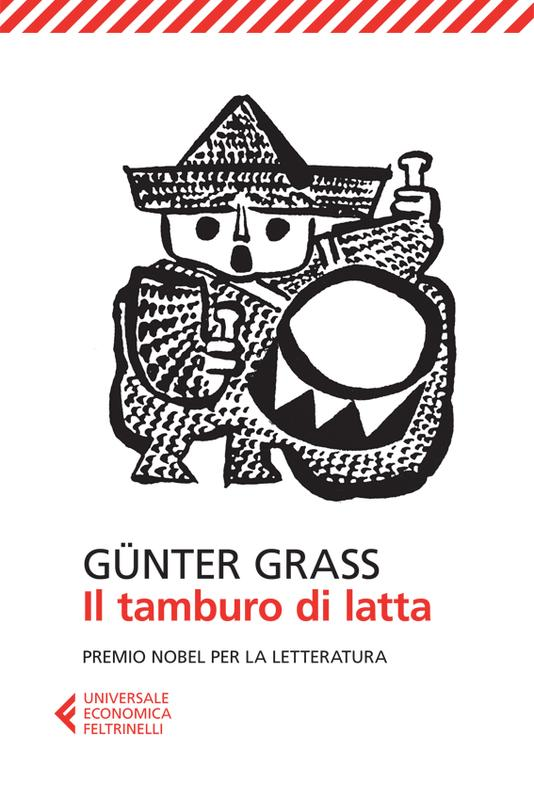
Il tamburo di latta (Die Blechtrommel)
Copertina: Feltrinelli, Universale Economica, 2 gennaio 2013, 608 pagine nel catalogo editoriale, traduzione di Bruna Bianchi, ISBN 9788807880339. Copertina intera bianca con disegno del suonatore di tamburo. L’originale tedesco è del 1959; non si usa la traduttrice di una precedente edizione italiana.
Immagine autentica dell’opera, controllata visivamente; l’edizione di riferimento non è attribuita al filmato.
Günter Grass, Il tamburo di latta.
Passaggio 28:02 ↗ · Fonti e libro ↗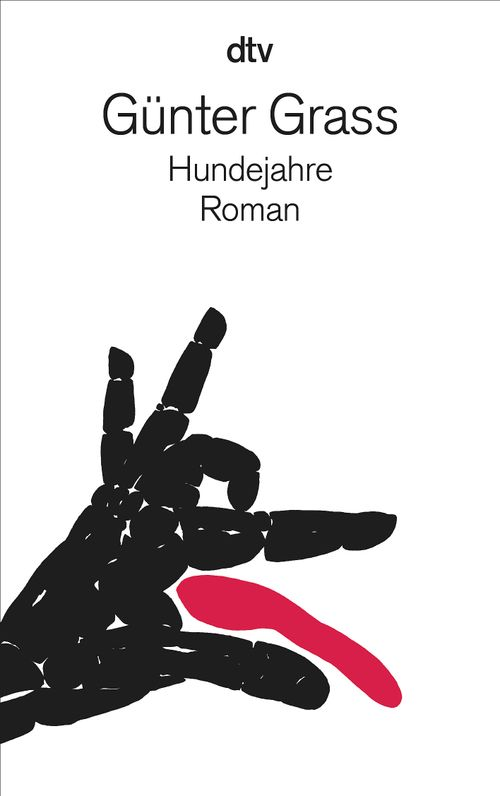
Anni di cane (Hundejahre)
Copertina: Hundejahre, dtv, edizione tascabile del 1 settembre 1993, 10ª edizione indicata nel catalogo attuale, 752 pagine, ISBN 9783423118231. Copertina intera bianca con mano che forma un cane e particolare rosso. Non è la copertina originale Luchterhand del 1963.
Immagine autentica dell’opera, controllata visivamente; l’edizione di riferimento non è attribuita al filmato.
Günter Grass, Anni di cane.
Passaggio 28:02 ↗ · Fonti e libro ↗
Aspettando Godot (En attendant Godot)
Copertina: En attendant Godot, Les Éditions de Minuit, ISBN 9782707301482, catalogo corrente 128 pagine. Copertina intera bianca e blu con due figure; l’opera è pubblicata nel 1952, scritta nel 1948–1949 e rappresentata per la prima volta il 5 gennaio 1953. L’immagine corrente non è attribuita al primo tiraggio del 1952.
Immagine autentica dell’opera, controllata visivamente; l’edizione di riferimento non è attribuita al filmato.
Beckett, Aspettando Godot.
Passaggio 28:13 ↗ · Fonti e libro ↗Il secondo avvento (The Second Coming)
Identificazione probabile
Copertina della raccolta: COPERTINA DELLA RACCOLTA Collected Poems, W. B. Yeats, Macmillan Collector’s Library, luglio 2016, 480 pagine, introduzione di Robert Mighall, ISBN 9781909621640. Riproduce la raccolta del 1933. Immagine intera con paesaggio marino; condivisa fra i tre componimenti, distinti nel repertorio. Non è una pubblicazione autonoma della singola poesia.
Copertina autentica della raccolta che contiene il testo citato; il singolo componimento non è un volume autonomo. Edizione non identificata nel video.
La bestia che avanza per nascere: allusione alla chiusa di The Second Coming.
Passaggio 31:24 ↗ · Fonti e libro ↗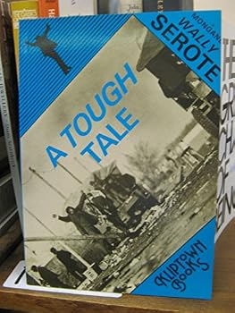
A Tough Tale
Identificazione probabile
Copertina: A Tough Tale, Kliptown Books, Londra, 1987, 48 pagine, ISBN 0904759806. Fotografia intera di un esemplare, copertina azzurra con titolo e autore diagonali e fotografia in bianco e nero. L’annuncio contemporaneo in Index on Censorship data la pubblicazione al luglio 1987.
Immagine autentica dell’opera, controllata visivamente; l’edizione di riferimento non è attribuita al filmato.
Versi conclusivi di Mongane Wally Serote: nota Nobel 13, A Tough Tale.
Passaggio 31:31 ↗ · Fonti e libro ↗